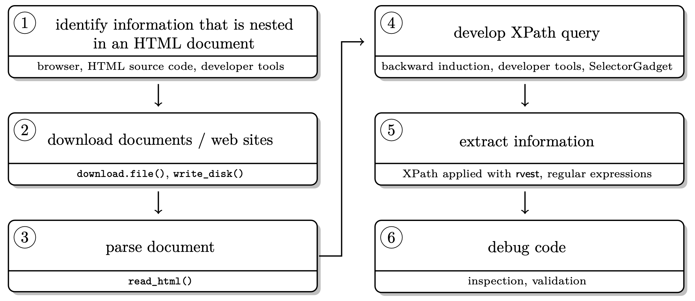
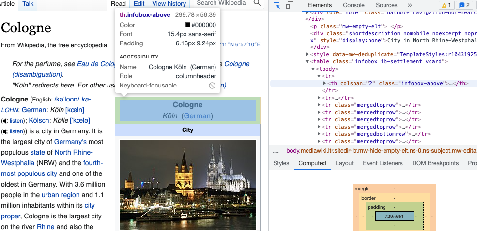
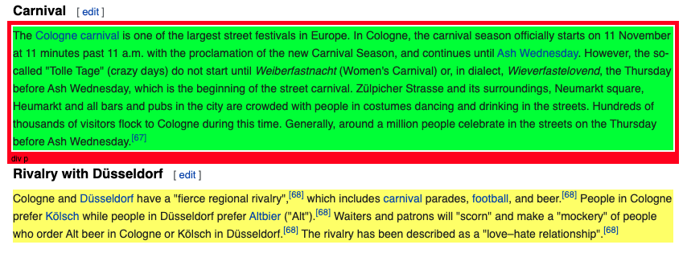
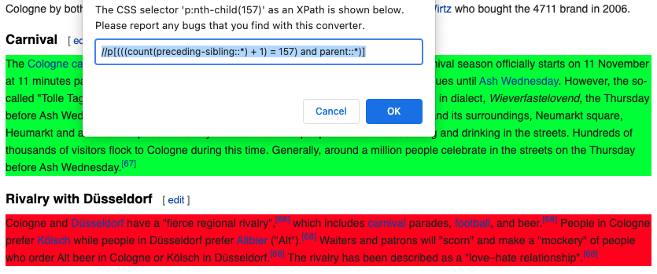
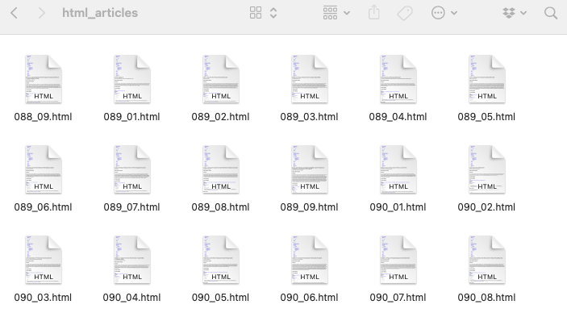

After talking quite a bit about data formats and data processing in the past weeks, today’s session is dedicated to data collection - from the web!
What we will cover:
What we will not cover (today):
Webscraping broadly includes a) getting (unstructured) data from the web and b) bringing it into shape (e.g. cleaning it, getting it into tabular format).
Why webscrape? While some influential people consider “Data Scientist” 👩💻 as the sexiest job of the 21st century (congratulations!), one of the sexiest just emerging academic disciplines (my influential view) - Computational Social Science (CSS). Why so?
BUT online data are usually meant for display, not (clean) download!
But getting access to online data would also be incredibly interesting when you think of very pragmatic things like financial resources, time resources, reproducibility and updateability…
Luckily, with R we can automate the whole pipeline of downloading, parsing and post-processing to make our projects easily reproducible.
In general, remember, the basic workflow for scraping static webpages is the following.

rvest 🚜Who doesn’t love Wikipedia? Let’s use this as our first, straight forward test case.
Step 1. Load the packages rvest and stringr.
library(rvest)
library(stringr)Step 2. Parse the page source.
parsed_url <- read_html("https://en.wikipedia.org/wiki/Cologne")Step 3. Extract information.
parsed_nodes <- html_nodes(parsed_url,
xpath = '//p[(((count(preceding-sibling::*) + 1) = 157) and parent::*)]')
carnival <- html_text(parsed_nodes)
carnival## [1] "The Cologne carnival is one of the largest street festivals in Europe. In Cologne, the carnival season officially starts on 11 November at 11 minutes past 11 a.m. with the proclamation of the new Carnival Season, and continues until Ash Wednesday. However, the so-called \"Tolle Tage\" (crazy days) do not start until Weiberfastnacht (Women's Carnival) or, in dialect, Wieverfastelovend, the Thursday before Ash Wednesday, which is the beginning of the street carnival. Zülpicher Strasse and its surroundings, Neumarkt square, Heumarkt and all bars and pubs in the city are crowded with people in costumes dancing and drinking in the streets. Hundreds of thousands of visitors flock to Cologne during this time. Generally, around a million people celebrate in the streets on the Thursday before Ash Wednesday.[67]"How can do I know THIS xpath = '//p[(((count(preceding-sibling::*) + 1) = 157) and parent::*)]' ?
There are two options:
Option 1. On your page of interest, go to a table that you’d like to scrape. Our favorite bowser for webscraping is Google Chrome but others work as well. On Chrome, you go in View > Developer > inspect elements. If you hover over the html code on the right, you should see boxes of different colors framing different elements of the page. Once the part of the page you would like to scrape is selected, right click on the html code and Copy > Copy Xpath. That’s it.

Option 2. You download the Chrome Extension SelectorGadget and activate it while browsing the page you’d like to scrape from. You will see a selection box moving with your cursor. You select an element by clickin on it. It turns green - and so does all other content that would be selected with the current XPath.

You can now de-select everything that is irrelevant to you by clicking it again (it then turns red). Final step, then just click the XPath button at the bottom of the browser window. Make sure to use single quotation marks with this XPath!

Let’s repeat step 2 and 3 with a more data-sciency example. 🕺
Step 2. Parse the page source.
hot100page <- "https://www.billboard.com/charts/hot-100"
hot100 <- read_html(hot100page)Step 3. Extract information. When going through different levels of html, you can also use tidyverse logic.
body_nodes <- hot100 %>%
html_node("body") %>%
html_children()
body_nodes %>%
html_children()play with that yourself if you like…
Now let’s get more specific - xml_find_all() takes xpath syntax!
rank <- hot100 %>%
rvest::html_nodes('body') %>%
xml2::xml_find_all("//span[contains(@class, 'chart-element__rank__number')]") %>%
rvest::html_text()
artist <- hot100 %>%
rvest::html_nodes('body') %>%
xml2::xml_find_all("//span[contains(@class, 'chart-element__information__artist')]") %>%
rvest::html_text()
title <- hot100 %>%
rvest::html_nodes('body') %>%
xml2::xml_find_all("//span[contains(@class, 'chart-element__information__song')]") %>%
rvest::html_text()Step 4. Usually, step 4 is to clean extracted data. In this case, it actually is very clean already. However, if you need help with data cleaning using regular expressions (me, always.), visit the section of R for Data Science or simply this cheat sheet.
Step 5. Put everything into a data frame. 🎵
chart_df <- data.frame(rank, artist, title)
knitr::kable(chart_df %>% head(10))| rank | artist | title |
|---|---|---|
| 1 | Coldplay x BTS | My Universe |
| 2 | The Kid LAROI & Justin Bieber | Stay |
| 3 | Lil Nas X & Jack Harlow | Industry Baby |
| 4 | Drake Featuring Future & Young Thug | Way 2 Sexy |
| 5 | Walker Hayes | Fancy Like |
| 6 | Ed Sheeran | Bad Habits |
| 7 | Olivia Rodrigo | Good 4 U |
| 8 | Doja Cat Featuring SZA | Kiss Me More |
| 9 | Drake Featuring 21 Savage & Project Pat | Knife Talk |
| 10 | Dua Lipa | Levitating |
We have just been scraping an html table… but there is even an easier way to do this in rvest!
url_p <- read_html("https://en.wikipedia.org/wiki/List_of_human_spaceflights")
tables <- html_table(url_p, header = TRUE, fill = TRUE)
spaceflights <- tables[[1]]
knitr::kable(spaceflights[,1:7] %>% head(10))| Entity | Soviet Union | Soviet Union | Soviet Union | United States | United States | United States |
|---|---|---|---|---|---|---|
| Agency | Soviet space program | Soviet space program | Soviet space program | NASA | NASA | NASA |
| Decades | Program | Dates[a] | No.[b] | Program[c] | Dates | No.[d] |
| 1961–1970 | Vostok | 1961–1963 | 6 | Mercury | 1961–1963 | 6 |
| 1961–1970 | Voskhod | 1964–1965 | 2 | X-15 | 1962–1968 | 13 |
| 1961–1970 | Soyuz | 1967–1991 | 63 | Gemini | 1965–1966 | 10 |
| 1961–1970 | Soyuz | 1967–1991 | 63 | Apollo | 1968–1972 | 11 |
| 1971–1980 | Soyuz | 1967–1991 | 63 | Apollo | 1968–1972 | 11 |
| 1971–1980 | Soyuz | 1967–1991 | 63 | Skylab | 1973–1974 | 3 |
| 1971–1980 | Soyuz | 1967–1991 | 63 | Apollo–Soyuz | 1975 | 1 |
| 1981–1990 | Soyuz | 1967–1991 | 63 | Space Shuttle | 1981–2011 | 135 |
Another R workaround for more complex tables is the package htmltab that offers some more flexibility.
Think about web data hosted on a static webpage that you might be interested in scraping! Comparably easy to scrape webpages are Wikipedia pages or pages that contain data in table format (as we’ve seen already).
Before you start - it might be worth a thought to get Chrome + Selector Gadget. This will make your future as web scraper a bit easier.
Option A
Inspect the page and try to find the elements you are interested in in the html code.
Parse the url.
Extract the XPath for the element you would like to scrape and parse the nodes.
Inspect the html output you get. What would be the next steps now? Can you already put your output into a dataframe?
Option B
Find an html table that you’d like to scrape.
Scrape it.
Whenever you want to really understand what’s going on within the functions of a new R package, it is very likely that there is a relevant article published in the Journal of Statistical Software. Let’s say you are interested in how the journal was doing over the past years.
Step 1. Inspect the source. Basically, follow steps to extract the Xpath information.
browseURL("http://www.jstatsoft.org/issue/archive")Step 2 Develop a scraping strategy. We need a set of URLs leading to all sources. Inspect the URLs of different sources and find the pattern. Then, construct the list of URLs from scratch.
baseurl <- "http://www.jstatsoft.org/article/view/v"
volurl <- paste0("0", seq(1, 99, 1))
volurl[1:9] <- paste0("00", seq(1, 9, 1))
brurl <- paste0("0", seq(1, 9, 1))
urls_list <- paste0(baseurl, volurl)
urls_list <- paste0(rep(urls_list, each = 9), "i", brurl)
urls_list[1:5]## [1] "http://www.jstatsoft.org/article/view/v001i01"
## [2] "http://www.jstatsoft.org/article/view/v001i02"
## [3] "http://www.jstatsoft.org/article/view/v001i03"
## [4] "http://www.jstatsoft.org/article/view/v001i04"
## [5] "http://www.jstatsoft.org/article/view/v001i05"Step 3 Think about where you want your scraped material to be stored and create a directory.
tempwd <- ("data/jstatsoftStats")
dir.create(tempwd)
setwd(tempwd)Step 4 Download the pages. Note that we did not do this step last time, when we were only scraping one page.
folder <- "html_articles/"
dir.create(folder)
for (i in 1:length(urls_list)) {
# only update, don't replace
if (!file.exists(paste0(folder, names[i]))) {
# skip article when we run into an error
tryCatch(
download.file(urls_list[i], destfile = paste0(folder, names[i])),
error = function(e) e
)
# don't kill their server
Sys.sleep(runif(1, 0, 1))
} }While R is downloading the pages for you, you can watch it directly in the directory you defined…

Step 5 Check whether it worked.
list_files <- list.files(folder, pattern = "0.*")
list_files_path <- list.files(folder, pattern = "0.*", full.names = TRUE)
length(list_files)Yay! Apparently, we scraped the html pages of 802 articles.
Step 5 Import files and parse out information. A loop is helpful here!
# define output first
authors <- character()
title <- character()
datePublish <- character()
# then run the loop
for (i in 1:length(list_files_path)) {
html_out <- read_html(list_files_path[i])
authors[i] <- html_text(html_nodes(html_out , xpath = '//*[contains(concat( " ", @class, " " ), concat( " ", "authors_long", " " ))]//strong'))
title[i] <- html_text(html_nodes(html_out , xpath = '//*[contains(concat( " ", @class, " " ), concat( " ", "page-header", " " ))]'))
datePublish[i] <- html_text(html_nodes(html_out , xpath = '//*[contains(concat( " ", @class, " " ), concat( " ", "article-meta", " " ))]//*[contains(concat( " ", @class, " " ), concat( " ", "row", " " )) and (((count(preceding-sibling::*) + 1) = 2) and parent::*)]//*[contains(concat( " ", @class, " " ), concat( " ", "col-sm-8", " " ))]'))
}
# inspect data
authors[1:3]
title[1:2]
datePublish[1:3]
# create a data frame
dat <- data.frame(authors = authors, title = title, datePublish = datePublish)
dim(dat)Step 6 Clean data…
You see, scraping data from multiple pages is no problem in R. Most of the brain work often goes into developing a scraping strategy and tidying the data, not into the actual downloading/scraping part.
Scraping is also possible in much more complex scenarios! Watch out for workshop presentations on
and many more 🤩
This tutorial drew heavily on Simon Munzert’s book Automated Data Collection with R and related course materials. We also used an example from Keith McNulty’s blog post on tidy web scraping in R.
A work by Lisa Oswald & Tom Arend
Prepared for Intro to Data Science, taught by Simon Munzert